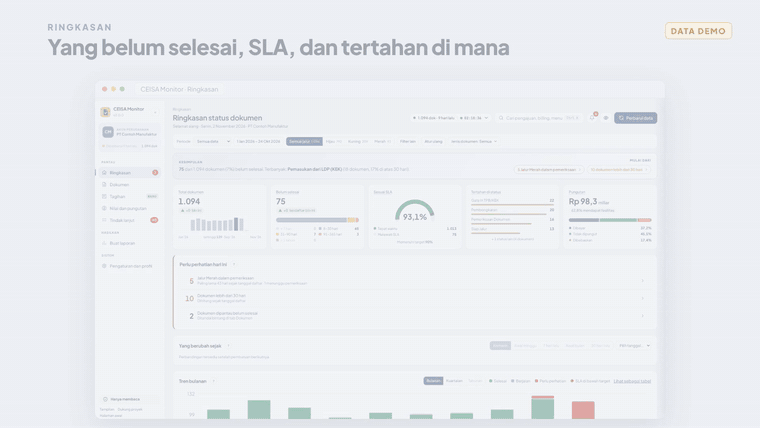
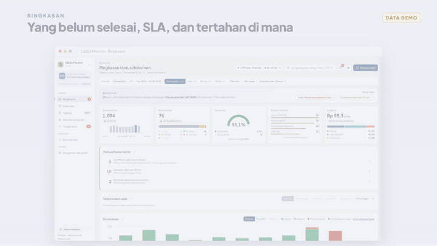
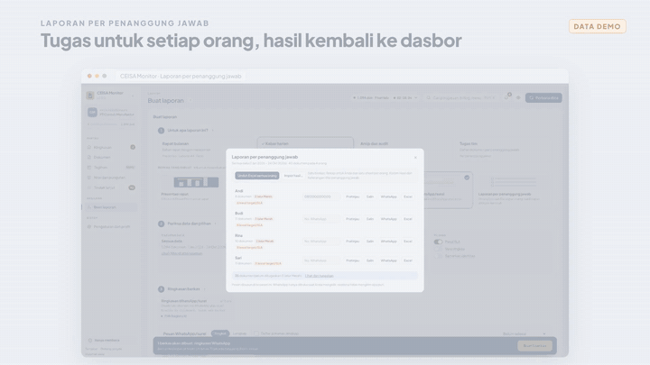

Video tutorial CEISA Monitor 2.0
Semua video bernarasi bahasa Indonesia dan memakai data fiktif berlabel DATA DEMO. Berkas video ada di rilis v2.0.0.
Perkenalan (38 detik)
CEISA_Monitor_2.0_Store.mp4: Ringkasan, Perlu perhatian, Buat laporan, laporan per penanggung jawab, dan prinsip keamanan.

Seri "Belajar CEISA Monitor 2.0"
| Bab | Isi | Panduan tertulis |
|---|---|---|
| 1. Memasang dan menarik data pertama | Pasang dari Chrome Web Store, pembaruan dari versi 1, Perbarui data di latar belakang, NPWP 15 digit, Profil perusahaan | Bagian 1–2 |
| 2. Ringkasan dan Perlu perhatian | Kesimpulan, kartu angka utama, Perlu perhatian hari ini, filter, dokumen lama | Bagian 3–4 |
| 3. Dokumen dan tindak lanjut | Tampilan, pencarian, panel dokumen, tahapan, isian tindak lanjut, papan Tindak lanjut | Bagian 5 dan 8 |
| 4. Buat laporan | Tujuan, kesiapan data, presentasi rapat, laporan resmi A4, Excel, pesan WhatsApp, Terakhir dibuat | Bagian 9 |
| 5. Laporan per penanggung jawab | Pesan WhatsApp dan Excel per orang, kolom Hasil, Impor hasil | Bagian 10 |
| 6. Pengaturan, Pemantauan, dan Cadangan | Bagian Pengaturan, Pemantauan dan kotak masuk, cadangan, akun, tema dan layar kantor | Bagian 11–13 |
Setiap bab berdurasi sekitar satu menit, dengan teks di layar sehingga dapat diikuti tanpa suara. Klik judul bab untuk membuka videonya.
Video lengkap (5 menit): Tutorial_lengkap_CEISA_Monitor_2.0.mp4
| Waktu | Bab |
|---|---|
| 0:00 | 1. Memasang dan menarik data pertama |
| 1:00 | 2. Ringkasan dan Perlu perhatian hari ini |
| 1:46 | 3. Dokumen, panel dokumen, dan tindak lanjut |
| 2:31 | 4. Buat laporan: mulai dari tujuan |
| 3:22 | 5. Laporan per penanggung jawab |
| 4:09 | 6. Pengaturan, Pemantauan, dan Cadangan |
| Ringkasan | Buat laporan | Laporan per penanggung jawab |
|---|---|---|
 |  |  |
Video versi 1 tetap tersedia di rilis lama, misalnya v1.17.0.